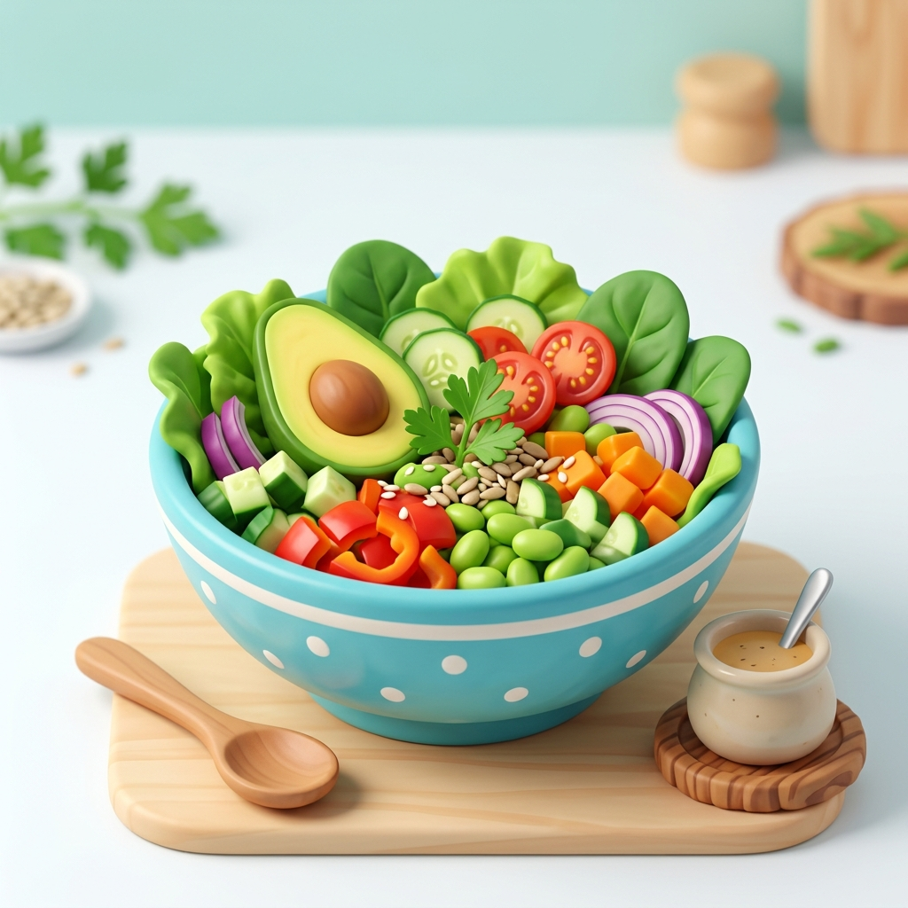

La plataforma que conecta a pacientes y nutricionistas.
Obtén rutinas alimentarias adaptadas a tu estilo de vida, registra tu evolución diaria y recibe la guía constante de nutricionistas profesionales. Si eres profesional, gestiona a tus pacientes con herramientas de vanguardia.

Diseñada para Transformar la Atención Nutricional
NutriApp une lo mejor de la tecnología con la experiencia médica y profesional en nutrición.
Para Pacientes
Alcanza tus objetivos de salud con un plan personalizado y acompañamiento permanente.
Para Nutricionistas
Optimiza la consulta, administra a tus pacientes y ofrece un seguimiento digital superior.
Herramientas Potentes e Intuitivas
Todo lo que necesitas en un solo lugar para una gestión de salud eficiente.
Planes & Rutinas a Medida
Creación de planes alimentarios flexibles ajustados por calorías, comidas diarias y requerimientos nutricionales específicos.
Monitoreo Estadístico
Gráficos interactivos de evolución de peso corporal, índice de masa corporal e historial de adherencia al tratamiento.
Mensajería en Tiempo Real
Canal de consulta fluida entre paciente y profesional para resolver dudas diarias sobre alimentos y comidas.
Gestión de Turnos & Solicitudes
Los pacientes pueden solicitar atención directamente a nutricionistas registrados y recibir aprobación inmediata.
Nuestros Nutricionistas Registrados
Explora a los profesionales disponibles en la plataforma y solicita tu consulta.
Cargando nutricionistas registrados...
Experiencias de Nuestros Pacientes
Historias reales de personas que transformaron su salud con NutriApp.
Cargando experiencias...
¿Tienes dudas sobre NutriApp?
Escríbenos para consultas sobre registro de profesionales, soporte técnico o asistencia para crear tu cuenta.